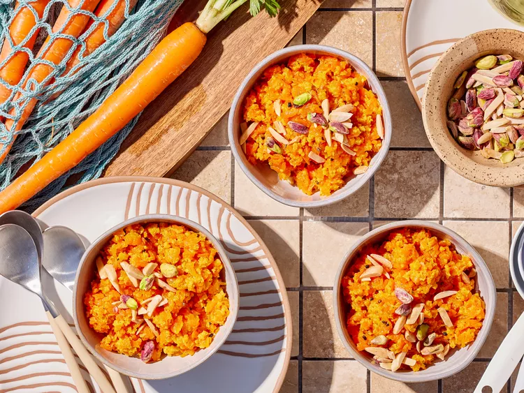

Carrot Halwa

Gajar ka halwa, also known as gajar ka halwa and carrot pudding, is a type of halva, an Indian dessert, made by placing grated carrots in a pot containing a specific amount of water, milk, sugar, and cardamom and then cooking with ghee while stirring regularly.
Ingredients
- 4 cups shredded carrots
- 4 cups whole milk
- ½ cup sugar
- 1 teaspoon ground cardamom
- 3 tablespoons oil
- ⅛ cup slivered almonds, toasted
- ⅛ cup dry- roasted pistachio nuts
Steps
- Combine carrots, milk, and sugar in a boil over high heat, stirring occasionally.
- Reduce heat to medium; cook, stirring occasionally, until liquid has evaporated, about 1 hour.
- Heat oil in a very large skillet over medium-high heat. Cook half of cardamom until fragrant, about 30 seconds.
- Add carrot mixture and cook, stirring constantly, until thick and jammy, about 15 minutes. Remove from heat.
- Stir in remaining cardamom. Sprinkle with almonds and pistachios just before serving.
Home